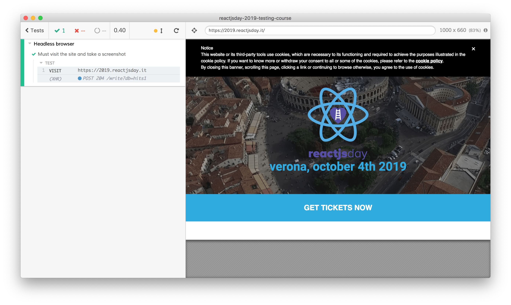

Headless browser
TODO: transform it in slides
A headless browser is a standard web browser without a GUI. You instrument it with some APIs that replicate the user actions (navigating, clicking, typing, etc.) and you can leverage it to automate everything that requires a running browser.
Selenium and Puppeteer are the most used browser automation tools while Cypress, TestCafé, Protractor, etc. leverage the same mechanism with the purpose of testing a web app.
Let's take a look at what a "browser without GUI" means with the first example using Cypress (we're going to speak later about why we choose Cypress).
File: cypress/integration/examples/headless-browser.spec.js
context("Headless browser", () => {
it("Must visit the site and take a screenshot", () => {
cy.visit("https://2019.reactjsday.it");
cy.screenshot();
});
});
Cypress is going to run this test, visit the specified page and take a screenshot.
And try to run it through the terminal
$ npx cypress run --spec \"cypress/integration/**/headless-browser.*\"
what does it do?
- it runs Cypress in headless mode (without a GUI)
- it asks cypress to run only the test with the filename containing
headless-browser
For your convenience, you can run directly
$ npm run example:headless-browser
that's the output...
====================================================================================================
(Run Starting)
┌────────────────────────────────────────────────────────────────────────────────────────────────┐
│ Cypress: 3.4.1 │
│ Browser: Electron 61 (headless) │
│ Specs: 1 found (examples/headless-browser.spec.js) │
│ Searched: cypress/integration/**/headless-browser.* │
└────────────────────────────────────────────────────────────────────────────────────────────────┘
────────────────────────────────────────────────────────────────────────────────────────────────────
Running: examples/headless-browser.spec.js... (1 of 1)
Headless browser
✓ Must visit the site and take a screenshot (15375ms)
...
... and the screenshot took by Cypress.

As you can see, it's the screenshot of the ReactJSDay website.
Take a look at the Cypress log, it launched Electron (a sort of soft version of Chrome) in headless mode, it launched the test and the test saved the screenshot. While Electron is a real browser, you have not seen anything about it: that's how a headless browser works!
Every headless browser could be launched in non-headless mode (with a GUI, like the standard browsers we use to browse the web) and you can do the same with Cypress too.
Try running
$ npx cypress open
or
$ npm run cy:open
The Cypress UI pops up, look for the headless-browser.spec.js test and launch it

Cypress launch the Electron browser and run the test inside it

That's what "leveraging a headless browser" means: automating some actions inside a browser that can be launched without a GUI (or with it if needed).